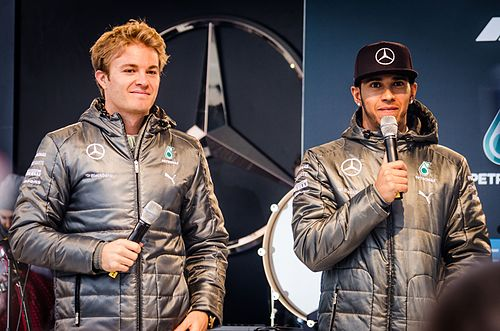
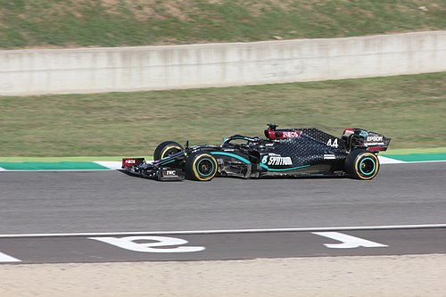
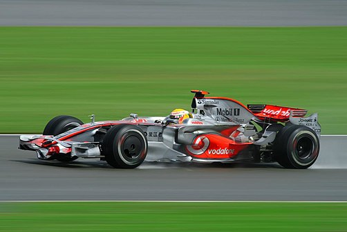
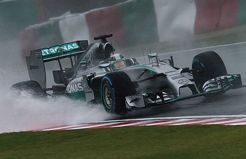

İlk yılları ve eğitimi
Lewis Hamilton, 7 Ocak 1985'te Stevenage, Hertfordshire, İngiltere'de doğdu.[11] Babası Anthony Hamilton Grenada asıllı bir siyahiyken annesi Carmen Larbalestier beyazdır.[12] Hamilton ise melez olmasına rağmen kendini siyahi olarak tanımlamaktadır.[8] Hamilton'ın ebeveynleri Hamilton henüz 2 yaşındayken ayrıldı ve Hamilton, 12 yaşına kadar annesi ve üvey ablaları Samantha ve Nicola ile yaşadı.[13] Daha sonra babasının yanına yerleşen Hamilton, burada ise üvey annesi Linda ve kendisi gibi profesyonel yarış pilotu olan üvey kardeşi Nicolas ile yaşadı.[14] Hamilton ailesi tarafından Katolik olarak yetiştirilmiştir.[15] Hamilton'ın babası Hamilton'a 5 yaşındayken uzaktan kumandalı araba aldı. Ertesi yıl Hamilton, yetişkinlere karşı mücadele ettiği ulusal uzaktan kumandalı araba yarışları şampiyonasında 2. oldu. Yarış kulübündeki tek siyahi çocuk olan Hamilton, kulüpte ırkçılığa ve akran zorbalığına maruz kaldı. Hamilton 6 yaşındayken babası, Noel'de ona bir go-kart hediye etti ve ona akademik yaşamını çalışkan ve başarılı şekilde sürdürdüğü sürece yarış kariyerini destekleyeceğini söyledi. Normalde bilgi işlem sorumlusu olan Anthony Hamilton; oğlu Lewis'in kariyerini desteklemek amacıyla müteahhitlik, tezgâhtarlık, bulaşıkçılık ve emlak acentelerinde ayak işi dâhil olmak üzere aynı anda dört işte birden çalıştı, buna rağmen oğlunun yarışlarını izlemeyi ihmâl etmedi. Daha sonrasında ise Anthony Hamilton, kendi bilgi işlem şirketini kurdu. Hamilton'ın babası, oğlunun menajerliğini 2010'un başına kadar yapmaya devam etti. Henüz beş yaşındayken zorbalığa maruz kalan Hamilton, kendisini savunmak için karate dersleri aldı. Hamilton, ortaokulu Stevenage'de gönüllü bağışlarıyla ayakta duran John Henry Newman Katolik Okulunda okudu. Karting kariyerinin yanı sıra Hamilton, okulunun takımlarında kriket ve sonradan İngiltere millî futbol takımında oynayacak Ashley Young ile beraber futbol oynadı. Aynı zamanda Arsenal taraftarı olan Hamilton, eğer yarış kariyerinde işler beklediği gibi gitmeseydi büyük ihtimalle futbolcu veya kriketçi olacağını söylemiştir. Şubat 2001'de Hamilton, Cambridge'deki Cambridge Arts and Sciences (CATS) Yüksekokuluna başladı.
Genç yarış kariyeri
Karting
Hamilton, karting kariyerine 1993'te başlar başlamaz minik kategorilerinde yarışlar kazanmaya başladı.[29][30] İki yıl sonra, 10 yaşındayken en genç Birleşik Krallık minikler karting şampiyonu oldu. Aynı zamanda bir McLaren taraftarı olan Hamilton, aynı yıl Autosport Ödüllerinde McLaren takım patronu Ron Dennis'ten imza istedi ve ona "Merhaba, ben Lewis Hamilton. Birleşik Krallık şampiyonuyum ve bir gün sizin aracınızda yarışmak istiyorum." dedi.[20] Dennis ise Hamilton'ın imza defterine yanıt olarak "Dokuz yıl sonra beni ararsan bakarız." diye not düştü.[31] Hamilton 12 yaşındayken bahis şirketi Ladbrokes; Hamilton'ın 23 yaşından önce Formula 1 yarışı kazanmasına 1'e 40, 25 yaşından önce dünya şampiyonu olmasına ise 1'e 150 oranlı olmak üzere iki bahis açtı.[32] 1998 yılında Hamilton'ın ikinci defa Super 1 ve Birleşik Krallık şampiyonu olmasının ardından Ron Dennis, Hamilton'ı arayarak ona McLaren genç pilot programı ile sözleşme teklif etti.[12] Gelecekte kendisine Formula 1'de koltuk vadeden sözleşmeyi kabul eden Hamilton, aynı zamanda Formula 1 koltuğunu garantileyen en genç pilot oldu.[29] Sözleşmede vadedilen Formula 1 koltuğu, 2007 yılında Hamilton'ın McLaren'a katılmasıyla gerçekleşti. Hamilton, kariyerine 1999'da Intercontinental A, 2000'de Formula A ve 2001'de Formula Super A klasmanlarında devam etti, 2000 yılında alınabilecek en yüksek puan ile Avrupa şampiyonu oldu. Formula A ve Formula Super A serilerinde Mercedes-Benz/McLaren takımında yarışan Hamilton, burada daha sonradan Mercedes'te 2013'ten 2016'ya tekrar beraber süreceği Nico Rosberg ile takım arkadaşı oldu. British Racing Drivers' Club, Hamilton'ı karting başarılarından dolayı 2000 yılında "Yükselen Yıldız" ilân etti.[33] 2001 yılında daha sonradan Formula 1'de yarışacak Rosberg ve Vitantonio Liuzzi ile beraber Michael Schumacher'nın bir kereliğine kartinge geri döndüğü Dünya Karting Şampiyonasının son yarışında yarışan Hamilton, yarışı Schumacher'nın dört sıra arkasında yedinci tamamladı. Her ne kadar pistte fazla rekabete girmeseler de Schumacher, yarışın ardından Hamilton'dan övgüyle bahsetti.
Michael Schumacher, 2001 yılında Hamilton hakkında.
Henüz sadece 16 yaşında olmasına rağmen gerçekten kaliteli ve güçlü bir pilot. Eğer böyle devam ederse Formula 1'de yarışacağına eminim. Pistte onun yaşında bir çocuğu görmek gerçekten çok özel bir şey. O, kesinlikle bir yarışçı mentalitesine sahip.
Formula Renault ve Formula 3
Hamilton, kartingden araba yarışlarına sezonu beşinci tamamlayacağı 2001 Formula Renault Birleşik Krallık Kış Serisinde geçiş yaptı.[17] 2002'de Formula Renault Birleşik Krallık 2.0 serisinde Manor Motorsport takımında yarışan Hamilton, serideki ilk sezonunu 3. tamamladı.[36] Ertesi sezon Manor'da kalıp aynı seride yarışmaya devam eden Hamilton, sezonu daha sonradan IndyCar'da yarışacak Alex Lloyd'un önünde birinci bitirdi.[37] Son iki yarıştan önce çoktan şampiyonluğu garantileyen Hamilton, Birleşik Krallık Formula 3 Şampiyonasının son 2 yarışına çıkmak için kendi serisindeki son 2 yarışa çıkmadı.[38] Birleşik Krallık Formula 3 serisinde de Manor adına yarışan Hamilton'ın ilk yarışında lastiği patladı, ikinci yarışında ise takım arkadaşı Tor Graves ile kazaya karışarak hastaneye kaldırıldı.[39][40] 2002 yılında Hamilton'a en genç Formula 1 pilotlarından biri olma ihtimâli soruldu. Hamilton ise amacının Formula 1'deki en genç pilot olmak olmadığını, aksine alt yaş kategorilerinde tecrübelenip Formula 1'de neler yapabileceğini göstermek olduğunu belirtti.[41] 2004'te Manor adına Formula 3 Euro Series'de yarışan Hamilton, sezonu 5. tamamladı.[42] Aynı yıl Bahreyn Superprix'yi kazanan Hamilton, iki kez de Makao Grand Prix'de yarıştı. 2008 yılında Williams'ın başmühendisi Patrick Head, Williams'ın McLaren ile bir sezon daha Formula 3 Euro Series'de yarışmak konusunda anlaşmazlığa düşen Lewis Hamilton ile 2004 yılı sonunda anlaştığını, ancak takımın motor sağlayıcısı BMW'nin Hamilton'ın transferini maddî olarak desteklemekte isteksiz olmasından dolayı anlaşmanın bozulduğunu açıkladı.[46] Genç pilot programında sonradan McLaren CEO'su olacak, aynı zamanda Lewis Hamilton'ın gelişiminden sorumlu olan McLaren yöneticisi Martin Whitmarsh; Hamilton'ın babasının Lewis'i 2005'te GP2'de yarışması konusunda baskıladığını, kendisinin ise Lewis'in bir sezon daha Formula 3 Euro Series'de kalması gerektiğini düşündüğünü belirtti. En sonunda Whitmarsh, Hamilton ve babasına "Bu kadar baskıcı olacaksanız burada kalamazsınız. Biz sizinle çalışmak istiyoruz, eğer siz istemiyorsanız..." deyip Lewis'in sözleşmesini yırttı ancak Hamilton, 6 hafta sonra Whitmarsh'ı tekrar arayarak şartlara uydu ve McLaren ile sözleşmesini yenileyerek 2005'te de Formula 3 Euro Series'de yarıştı.[20] Whitmarsh, bu konu hakkında Lewis'in onu tekrar arayıp sözleşmeyi kabul etmesi konusunda kendisinin gerçekten şanslı olduğunu, eğer Hamilton McLaren'da yarışmasaydı kendisinin bundan sorumlu olacağını söyledi.[20] Hamilton, 2004 yılının sonunda ilk kez McLaren test sürüşüne katıldı.[47] 2005 sezonu için Formula 3 Euro Series'in son şampiyonu ASM'e katılan Hamilton, 20 yarıştan 15'ini kazanarak sezonu dominant bir şekilde şampiyon kapattı.[17] Aynı sene Zandvoort'ta Marlboro Masters of Formula 3'yi kazanan Hamilton, sezon sonunda Autosport dergisi tarafından 2005'in en iyi 50 pilotu arasında 24. gösterildi.
GP2
Hamilton, 2005'teki dominant sezonunun ardından 2006 GP2 sezonu için ASM'in ana takımı ART Grand Prix ile anlaştı.[50] Lewis Hamilton, GP2'deki ilk sezonunda Nelson Piquet Jr.'a 12 puan fark atarak şampiyon olmayı başardı.[51] Nürburgring'de pit yolunda hız yaptığı için ceza alan Hamilton, buna rağmen dominant bir şekilde kazanmayı başardı.[52] Silverstone'daki sprint yarışında Hamilton, geçişin zor olduğu yüksek hızlı Becketts virajında iki rakibini birden geçti.[53] İstanbul'da attığı spin yüzünden 18.'liğe kadar gerileyen Hamilton, yarışı ikinci tamamlamayı başardı.[54] Monza'da yarışı Petrol Ofisi FMS pilotu Giorgio Pantano'nun ardında 2. tamamlayan Hamilton, Pantano'nun en hızlı turunun iptal edilmesinin ardından yarışı en hızlı tur ile bitirerek şampiyonluğunu ilan etti.[55][56] McLaren pilotları Juan Pablo Montoya'nın NASCAR serisine, Kimi Räikkönen'in ise Ferrari koltuğuna geçmesiyle beraber GP2 şampiyonu Lewis Hamilton'ın boşalan McLaren koltuğuna geçiş ihtimâli tartışılmaya başlandı.[57][58] Son 2 yıl boyunca şampiyon olduğu Renault'tan McLaren'a geçen Fernando Alonso'nun takım arkadaşlığı için Pedro de la Rosa ve son sene DTM'e ara verip McLaren'da test pilotluğu yapan Gary Paffett ile beraber ismi öne sürülen Hamilton, 2006'nın Kasım ayında ise McLaren tarafından resmen açıklandı.[59][60] Eylül ayında 2007'de McLaren adına Formula 1'de süreceği Hamilton'a bildirilse de anlaşma, Michael Schumacher'nın emeklilik haberinin gölgesinde kalmaması için kararın kesinleşmesinden 2 ay sonra duyuruldu.
Formula 1 kariyeri
McLaren (2007-2012)
Formula 1'de yarışan ilk ve 2021 itibarıyla tek siyahi pilot olan Hamilton, Formula 1'deki ilk sezonunda son 2 sezonun şampiyonu Fernando Alonso ile takım arkadaşı oldu.[62][63][63] Henüz ilk yarışından podyuma çıkma başarısı gösteren Hamilton, ilk sezonunu Ferrari pilotu Kimi Räikkönen'in ardından 2. sırada tamamladı. İlk sezonunda Lewis Hamilton 9 kez ile ilk yarışından itibaren üst üste en çok podyuma çıkan pilot, 4 kez ile ilk sezonunda en çok yarış kazanan pilot ve 109 puan ile ilk sezonunda en çok podyuma çıkan pilot olma rekoru dahil olmak üzere birçok rekora imza attı.[64] Sezon boyunca Hamilton'ın takım arkadaşı Alonso ile karıştığı olaylar nedeniyle ikili arasında takımları McLaren'ın da dâhil olduğu bir gerginlik oluştu.[65] Bunun sonucunda ise Kasım ayında Alonso'nun McLaren ile sözleşmesi karşılıklı olarak feshedildi ve İspanyol pilot, 2008 sezonu için eski takımı Renault ile anlaştı.[66][67] Hamilton, McLaren ile başarılı geçen ilk sezonunun ardından sezon sonunda takımıyla 2012'ye kadar geçerli yıllık 10 milyon pound değerinde sözleşme imzaladı.ü 2008 yılında Alonso'nun yerine McLaren koltuğuna oturan Heikki Kovalainen ile takım arkadaşı olan Hamilton, bir sonraki sezonda da başarılı performansını sürdürdü.[69] İkinci sezonunda beş yarış zaferi elde eden Hamilton, on kez de podyuma çıktı. Interlagos'taki sezonun son yarışına 7 puan farkla lider çıkan Hamilton, şampiyonluk şansını ikinci sıradaki Ferrari pilotu Felipe Massa'nın kendi ülkesindeki son yarışa bıraktı.[70] Son turlarında yağmurun bastırdığı yarışı kazanan Massa damalı bayrağı gördüğünde Hamilton Sebastian Vettel'in arkasında 6. sırada olduğundan Massa ile puanları eşitleniyor, Hamilton'a kıyasla daha fazla yarışı 2. olarak tamamlayan Massa şampiyon oluyordu.[71] Massa ve Ferrari ekibi yarış zaferini ve Massa'nın neredeyse kesinleşmiş ilk şampiyonluğunu kutlarken Hamilton, yarışın son turunun son virajında kuru zemin lastikleriyle devam ettiği için yavaşlamak durumunda kalan Timo Glock'u geçerek yarışı 5. bitirdi ve sezonu Massa'nın 1 puan önünde şampiyon kapattı.[72] Hamilton'ın yavaşlayan Timo Glock'u kolay bir şekilde geçerek şampiyonluğunu ilan etmesi şike ve usulsüzlük iddialarını peşinde getirse de Glock, yağmurlu havada kuru zemin lastikleriyle yol tutuşunu çok zor bir şekilde ayarlayabildiği için yavaşladığını belirterek usulsüzlük iddialarını reddetti.[73] 2008 yılında ilk şampiyonluğunu kazanan Hamilton, ayrıca 1996 yılında şampiyon olan Damon Hill'den beri dünya şampiyonu olan ilk Britanyalı pilot oldu.[74] Ertesi sezon Hamilton, şampiyon olduğu 2008'e kıyasla başarısız bir sezon geçirerek 2 yarış zaferiyle sezonu 5. tamamladı. 2009 yılını 12. sırada bitiren Heikki Kovalainen ile 2010 sezonunda devam etmek istemeyen McLaren, Mercedes tarafından satın alınan Brawn ile şampiyon olan Jenson Button'u takıma kattı.[75] McLaren'daki sonraki üç sezonunda Button ile takım arkadaşı olan Hamilton, yarış zaferleri ve podyumlar kazanmaya devam etti. 2010 sezonunun son yarışına lider Fernando Alonso'nun 24 puan gerisinde şampiyonluk şansıyla giren Hamilton, yarışı lider bitiren ve Alonso ile 15 puanlık farkı kapatıp ilk şampiyonluğunu ilân eden Red Bull pilotu Sebastian Vettel'in hemen arkasında ikinci bitirerek sezonu dördüncü olarak tamamladı.[76] Ertesi sezonu 5. bitiren Hamilton, sezonu 2. tamamlayan takım arkadaşı Jenson Button'a geçilerek ilk kez bir sezonu takım arkadaşının gerisinde tamamladı.[77] 2011 sezonunda altı ceza alarak bir sezonda en fazla ceza alan pilot olan Hamilton, sezonu yaptığı kural ihlalleri nedeniyle federasyon ile tartışmaları ve nişanlısı Nicole Scherzinger ile ayrılması dâhil özel hayatında kendi deyimiyle dikkatini dağıtan birçok olay ile tamamladı. 2012 sezonunda ise önceki sezonlarındaki formuna geri döneceği konusunda takımına söz veren Hamilton, sezonu 4. tamamladı.[78] Sezonun bitiminden hemen önce Hamilton, emekli olan Michael Schumacher'nın yerine 2013 sezonunda Mercedes'te yarışacağını açıkladı
Mercedes (2013-günümüz)
Mercedes'e katılmasıyla beraber Hamilton'ın yolu, karting zamanında takım arkadaşlığı yaptığı Nico Rosberg ile yeniden kesişti.[82] Hamilton'ın Mercedes'e katılması bazı spor çevrelerince büyük bir sürpriz olarak kabul edilirken bazılarınca ise İngiliz pilotun şampiyonluk yarışındaki McLaren'dan yakın zamanda hiçbir başarısı olmayan Mercedes'e katılması büyük bir kumar olarak değerlendirildi.[83][84] Mercedes ile ilk sezonunda Hamilton, sadece Macaristan'da kazandığı pol pozisyonundan zafere ulaştı.[85] Sezonu 5 pol pozisyonu ve 5 podyum ile bitiren Hamilton, son 4 sezonda 3. kez sezonu 4. tamamladı.[81] 2014 sezonu öncesinde regülasyonlarda yapılan turbo hibrit motorların kullanımını zorunlu kılan değişiklikler, Mercedes ve Hamilton için oldukça başarılı bir dönemin başlangıcı oldu. Ayrıca getirilen yeni pilot numaralandırma kuralları, pilotların takımlarının bir önceki sezondaki sıralamalarına göre verilen ve her sene değişen numaraların yerine kariyerleri boyunca kullanabilecekleri 2'den 99'a kadar herhangi bir numara seçmelerinin yolunu açtı.[86] Bu düzenlemeyle beraber Hamilton, karting zamanına ithafen o yıllarda kullandığı 44 numarayı seçti.[87] Regülasyon değişikliğinin ilk sezonunda Mercedes 19 yarışın 16'sını kazanırken Hamilton, 11 yarış kazanarak 5 yarış kazanan takım arkadaşı Nico Rosberg'i geride bırakıp 2. şampiyon oldu.[88] Sezonun son yarışı olan Abu Dabi Grand Prix'de şampiyonluğunu ilân eden Hamilton, yarışın ardından radyoda "Bugün hayatımın en güzel günü." ifadelerini kullandı.[81] 2015 sezonu öncesinde Hamilton, normal şartlarda son dünya şampiyonunun kullandığı 1 numaralı aracı kullanmak yerine 44 numara ile yarışmaya devam edeceğini açıkladı. Bunun sebebi sorulduğunda Hamilton 1 numaranın ailevî değeri olan 44 numaranın aksine kendisi için bir şey ifade etmediğini, ayrıca 44 numaranın araçta daha güzel durduğunu belirtti.[89] Hamilton'ın bu adımıyla beraber 2015 sezonu, Alain Prost'un 1993 yılındaki dördüncü şampiyonluğunun ardından emekli olması dolayısıyla 1 numaralı aracın kullanılmadığı 1994'ten beri gridde 1 numaralı herhangi bir aracın olmadığı ilk sezon oldu.[90] Hamilton, 2015 sezonundaki 19 yarışın 10'unu kazanıp 17'sini ise podyumda tamamlayarak sezonu dominant bir şekilde şampiyonlukla tamamladı ve üçüncü şampiyonluğunu kazanarak çocukluktan beri kendisinin idolü olan Ayrton Senna'yı şampiyonluk sayısında yakaladı.[91][92] 2015 sezonunda Hamilton ve Rosberg arasındaki rekabetin en yoğun yaşandığı yarış, Hamilton'ın Rosberg'i 2.8 saniye farkla geçerek sezonun bitmesine üç yarış kala üçüncü şampiyonluğunu ilân ettiği Birleşik Devletler Grand Prix oldu.[81] 2015 yılının Mayıs ayında Hamilton, Mercedes ile toplam değeri 100 milyon poundu aşan 3 yıllık sözleşme imzaladı ve Formula 1 tarihinde en fazla kazanan pilotlar arasına girdi.[93][94] Hamilton, sözleşmeyle beraber şampiyonluk kazandığı araçlarını ve ödüllerini saklama hakkını edinmesinin yanı sıra Formula 1'de ender rastlanan bir şekilde kendi imaj haklarına da sahip oldu.  2016 yılında en çok yarış zaferi ve pol pozisyonu kazanan pilot olan Hamilton, buna rağmen 5 puan farkla Nico Rosberg'e kaybetti.[96] Mercedes'in bu sezon Hamilton ve Rosberg ikilisinin mücadeleye girmesine izin vermesi, ikilinin hem pistte hem de pist dışında sert bir rekabete girmesine yol açtı.[97] Hamilton, sezonun son yarışı Abu Dabi Grand Prix'de Rosberg'den şampiyonluğu geri almak için takım emirlerine karşı gelerek Rosberg'in önünde yavaş bir şekilde savunma yaparak arkadan gelen Ferrari pilotu Sebastian Vettel ve Red Bull pilotları Max Verstappen ve Daniel Ricciardo'nun Rosberg'i geçmesini sağlamaya çalıştı. Fakat Rosberg yarışı Hamilton'ın 0.4 saniye arkasında, Vettel'in ise 0.4 saniye önünde ikinci bitirmeyi başararak şampiyonluğunu ilân etti.[98] Hamilton, sezonun ilk yarışlarında arka arkaya zayıf startlar aldı ve lider götürdüğü Malezya Grand Prix'de motor arızasıyla yarış dışı kalıp 25 puan bıraktı.[96][99] Hamilton'ın puan kayıpları sonucunda şampiyonluğunu ilân eden Rosberg ise sözleşmesini henüz yeni yenilemiş olmasına rağmen sezonun ardından emekliliğini açıkladı. Rosberg'in emekliliğinin ardından son şampiyon Mercedes'te Hamilton'ın yanındaki boş koltuk için dünya şampiyonları Fernando Alonso ve Sebastian Vettel'in yanı sıra Red Bull pilotları Daniel Ricciardo ve Max Verstappen'in ve son sezonu Manor Racing'de geçiren Mercedes genç pilotu Pascal Wehrlein'ın isimleri tartışıldı.[101] Mercedes, Ocak ayında aynı zamanda takım patronu Toto Wolff'ün menajerliğini yaptığı Williams pilotu Valtteri Bottas'ı takıma kattığını açıkladı.[103][104] Böylece Hamilton, Heikki Kovalainen'den beri ikinci kez Formula 1'de bir Finlandiyalı ile takım arkadaşı olmuş oldu. 2017'de eski takım arkadaşı Rosberg'in aksine Bottas'ın Hamilton ile kıyasıya bir şampiyonluk rekabetine girememesi nedeniyle Hamilton'ın şampiyonluk yolundaki en büyük rakibi, Sebastian Vettel oldu. Sezon boyu 11 kez pol pozisyonu kazanıp Formula 1 tarihinde en çok pol pozisyonu kazanan pilot olan Hamilton, çıktığı tüm yarışlarda puan almayı başararak 9 yarış zaferi ile 4. kez şampiyon oldu.[105] Sezonun 13. yarışı olan İtalya Grand Prix'ye kadar şampiyonluk yarışında Vettel'in gerisinde kalan Hamilton, İtalya'da şampiyona liderliğini Vettel'dan alarak puan farkını açmaya başladı.[106] Meksika Grand Prix'de Hamilton, yarışı kazanan Max Verstappen'den 1 tur fark yiyerek 9. tamamlasa da Vettel'in 4. bitirmesiyle beraber sezonun bitimine 2 yarış kala şampiyonluğunu ilân etti 2018 yılında ilk kez 4 şampiyonluğa sahip iki pilot beşinci şampiyonluk için yarışa girdi. Hamilton ve Vettel'in bu mücadelesi, basın ve taraftarlar tarafından Fight for Five (beşinci [şampiyonluk] mücadelesi) olarak adlandırıldı.[107][108][109] Hamilton, sezon ortasına kadar Vettel ile sıcak bir şampiyonluk yarışına girse de Vettel'in liderken kaza yapıp şampiyonluk yarışında geriye düştüğü Almanya Grand Prix'den itibaren kalan 10 yarışın 7'sini kazanarak geçen seneki gibi sezonun bitimine 2 yarış kala Meksika'da şampiyonluğunu ilân etti.[110][111][112] Hamilton ayrıca sezonu 408 puanla tamamlayarak Formula 1 tarihinde bir sezonda en çok puan toplayan pilot oldu.[81][113] Aynı yılın Temmuz ayında Hamilton, Mercedes ile değeri yıllık 40 milyon pounda varan 2 yıllık sözleşme imzalayarak Formula 1 tarihinin en çok kazanan pilotu oldu.[114] 2019'da Hamilton, Mercedes'teki önceki sezonlarının aksine en yakın rakipleri Valtteri Bottas, Max Verstappen ve Charles Leclerc ile sıcak bir şampiyonluk yarışına girmeden sezonun bitimine 2 yarış kala Austin'de altıncı şampiyonluğunu ilân etti.[115] Sezonun son yarışında kariyerinde altıncı kez grand şelem[a] yapmasıyla beraber Hamilton, 11 yarış zaferi, 17 podyum ve 5 pol pozisyonuyla sezonu tamamladı.[116] İkinci sıradaki takım arkadaşı Bottas'tan 87 puan fazla, 413 puan toplayan Hamilton aynı zamanda geçen sezondan beri elinde tuttuğu bir sezonda en çok puan toplayan pilot rekorunu yeniden kırdı. COVID-19 pandemisi nedeniyle son anda iptal olan normal fikstürün ilk yarışı Avustralya Grand Prix'den 4 ay sonra başlayan 2020 sezonunda Hamilton, sezonun bitimine 3 yarış kala 6. başladığı ıslak zemindeki Türkiye Grand Prix'yi kazanarak yedinci şampiyonluğunu ilân etti.[118][119] Böylece Hamilton, Michael Schumacher'nın en çok şampiyon olan pilot rekorunu egale etti.[120] İptal olan yarışlar nedeniyle 17 yarış koşulan sezonda Hamilton, 11 yarış kazanarak yarış sayısına oranla kazanılan yarış bakımından en başarılı sezonunu geçirirken 14 yarışta podyuma çıktı ve 10 kez pol pozisyonunu elde etti. COVID-19'a yakalandığından Sakhir Grand Prix'ye katılamayıp koltuğunu Williams pilotu George Russell'a devreden Hamilton, Formula 1'deki ilk yarışından beri ilk kez bir yarışta start alamadı.[121][122][123] Hamilton ayrıca Formula 1 yönetiminin ırkçılık ve eşitsizliklere karşı başlattığı We Race As One kampanyasının ve Black Lives Matter hareketinin en büyük destekçilerinden biri oldu. Her yarıştan önce ırkçılığa karşı protesto amaçlı diz çöken Hamilton, bunun yanı sıra defalarca üstünde Black Lives Matter yazılı siyah tişört giydi.[124] Mercedes de ırkçılığa dikkat çekmek amacıyla W11 aracını siyah yaptı  Takımın hissedarları Daimler, Ineos ve Toto Wolff arasında Hamilton'ın yeni sözleşmesinin uzunluğu hakkında çıkan anlaşmazlığın ardından basında, Hamilton'ın emekli olup 2021 sezonunda yerini önceki sezon Sakhir'de Mercedes koltuğuna oturan George Russell'a bırakacağı konuşulmaya başlandı.[126][127] Her ne kadar Hamilton yeni sözleşme imzalamasa da Mercedes, 2020'nin Aralık ayında yayınlanan 2021 sezonu katılımcı listesine Hamilton'ı Mercedes pilotu olarak dâhil etti.[128] Şubat ayında Hamilton, Daimler'in istediği şekilde Mercedes ile bir sezonluk sözleşme imzaladı ve 2021 sezonunda yarışacağı resmen açıklandı.[129] 2021'de önceki iki sezonun aksine yeni regülasyonların ardından Hamilton, Red Bull pilotu Max Verstappen ile şampiyonluk için kafa kafaya rekabete girdi. Sezonun ilk 4 yarışından 3'ünü kazanan Hamilton, Verstappen'in kazandığı Monako Grand Prix'yi AlphaTauri pilotu Pierre Gasly'nin arkasında 7. tamamlayarak şampiyona liderliğini Verstappen'e kaybederken aynı zamanda Mercedes takımlar şampiyonası liderliğini Red Bull'a kaybetti.[130] Ertesi yarışı önde götüren Verstappen'in son turlarda lastik patlamasının ardından çıkan kırmızı bayrakla beraber Hamilton ve Mercedes, hem pilotlar hem de markalar şampiyonasında liderliği geri alma şansı yakaladı. Kırmızı bayrağın ardından koşulacak iki tura Red Bull pilotu Sergio Pérez'in ardında 2. sırada başlayan Hamilton, yanlışlıkla sihirli tuşu tetikleyerek aracın frenlerini kilitledi ve kaçış yoluna girdi.[131] Yarışı 30 saniye ceza alan Nicholas Latifi'nin önünde 15. sırada bitiren Hamilton, 2018 Avusturya Grand Prix'den beri ilk kez katıldığı bir yarıştan puan çıkaramadı.[132] Ayrıca yarış, Valtteri Bottas'ın da 12. sırada puansız bitirmesiyle beraber Mercedes'in iki aracının da yarışı tamamlamasına rağmen puan alamadığı 2012 Birleşik Devletler Grand Prix'den beri ilk yarış oldu.[133] 2021 İspanya Grand Prix'de Hamilton, 100. kez pol pozisyonunu kazanarak bu başarıya ulaşan ilk Formula 1 pilotu oldu.[134] Steiermark Grand Prix'yi Max Verstappen'in ardında 2. tamamlayan Hamilton, 43. kez bir yarışı 2. tamamlayarak Michael Schumacher'nın bu rekorunu egale ederken bu yarış ile beraber Mercedes, turbo hibrit çağında ilk kez ardı ardına dört yarışta galibiyet elde edemedi.[135] 2021 Britanya Grand Prix'ye ikinci cepten başlayan Hamilton, yarışın ilk turunda lider Verstappen'e Copse virajında temas ederek Verstappen'i yarış dışı bıraktı ve yarışın kırmızı bayrakla duraklatılmasına sebep oldu.[136] Kırmızı bayrağın bitiminde yarışa Ferrari pilotu Charles Leclerc'in arkasında ikinci cepten başlayan Hamilton, temas nedeniyle 10 saniye ceza alsa da yarışın bitimine üç tur kala Leclerc'i geçerek liderliği aldı ve yarışı kazandı.[137] Böylece Hamilton ve Mercedes'in beş yarışlık galibiyetsizlik serisi son bulurken şampiyonluk mücadelesinde Hamilton ve Verstappen arasındaki fark, tek yarışta 33'ten 8'e kadar indi. Hamilton, Macaristan Grand Prix'de çıkan kırmızı bayrağın ardından yarışın yeniden başlangıcında kuru zemin lastiklerine geçmeyip pit yolundan başlamayan tek isim olsa da sadece bir turun ardından pite girmek zorunda kalarak sonuncu sıraya düşse de yarış bitene kadar üçüncü sıraya yükselmeyi başardı ve pilotlar şampiyonasında Verstappen'den liderliği yeniden aldı.[138] Hamilton, Macaristan Grand Prix'sini ikinci olarak tamamlayan Sebastian Vettel'in yarıştan diskalifiye edilmesinin ardından ise ikinciliğe yükselerek Verstappen ile puan farkını açtı.[139] Yoğun yağmur nedeniyle defalarca ertelenmesinin ardından güvenlik aracının arkasında tek tur koşulup sonucun yarı puan verilerek tescil edildiği Belçika Grand Prix'de ise Hamilton ile Verstappen arasındaki puan farkı yeniden 3'e düşerken Hollanda Grand Prix'de Verstappen, 3 puan farkla şampiyona liderliğini geri aldı.[140][141] İtalya Grand Prix'de 2. virajda Verstappen'in aracı pist kenarına çarpıp havalanarak Hamilton'ın aracının üstüne çıktı, bunun sonucunda iki pilot da yarış dışı kaldı. Kazadan sonra Hamilton'ın başını Verstappen'in aracının tekerinden araçtaki halo sisteminin koruduğu fark edilirken Hamilton, kaza hakkında "Halo boynumu kurtardı." yorumunda bulundu.[142] Rusya Grand Prix'de yarışın son turlarında yarışı lider götüren Lando Norris'in yağmur bastırmasına rağmen kuru zemin lastiklerinde kalmasıyla beraber yedinci sıraya kadar gerilemesiyle Hamilton, 51. turda yarış liderliğini alarak Sochi Autodrom'da kariyerinin 100. zaferine ulaşarak Formula 1 tarihinde 100 yarış kazanan ilk pilot oldu ve şampiyona liderliğini aynı yarışta son sıradan 2. sıraya kadar yükselen Max Verstappen'den bir kez daha geri aldı.[143] Bir sonraki yarış olan Türkiye Grand Prix'nin sıralama turlarında en hızlı turu atarak Juan Pablo Montoya'nın elindeki pist rekorunu kıran Hamilton, içten yanmalı motorunu değiştirdiği için 10 sıra grid cezası alarak yarışa 11. sıradan başladı.[144] Yarışı beşinci sırada tamamlayan Hamilton, böylece pilotlar şampiyonasında yarışı ikinci tamamlayan Verstappen'in 6 puan farkla bir kez daha arkasına düştü.[145] São Paulo Grand Prix'de Hamilton, sıralama turlarının üç seansında da en hızlı turu elde etse de seans sonrasında aracında yapılan incelemeler sonucunda arka kanat açıklığı olması gerekenden 0,2 mm daha fazla bulunarak sıralama turları sonuçlarından diskalifiye edildi ve Grand Prix'nin sprint yarışına 20. cepten başlamak durumunda kaldı.[146] 24 turluk sprint yarışında Hamilton, son sıradan beşinci sıraya kadar yükselse de aynı hafta sonu içten yanmalı motorunu değiştirdiği için aldığı 5 sıra grid cezası yürürlüğe girdi ve pazar günkü ana yarışa 10. cepten başladı.[147] Buna rağmen Hamilton, yarışın 40. turundan itibaren dört tur boyunca Verstappen'in pite girmesiyle yarışı lider götürdü, yarışın 59. turunda ise Verstappen'i geçerek liderliği yeniden aldı ve Interlagos'taki yarışı zaferle tamamladı.[148] Yarış hafta sonunu "Böyle başka bir hafta sonu geçirdiğimi hatırlamıyorum." sözleriyle tanımlayan Hamilton, böylece Verstappen ile pilotlar şampiyonasında arasında bulunan puan farkını da 14'e indirmiş oldu.[149] Suudi Arabistan Grand Prix'de Mick Schumacher'nın kazasının ardından çıkan kırmızı bayraktan sonra yarışın yeniden başlamasıyla Verstappen'in gerisine düşse de Sergio Pérez, Nikita Mazepin ve George Russell'ın yarış dışı kalmalarının ardından yeniden çıkan kırmızı bayrak sırasında Verstappen'e Hamilton'ın arkasında başlaması gerektiği belirtildi, Hamilton ise yarışa Esteban Ocon'un ardında 2. sırada başladı.[150] Yarışın ileri bölümlerinde Hamilton ve Verstappen arasında yaşanan bir temasın ardından Verstappen zaman cezası aldı, bunun ardından ise Hamilton liderliği alarak farkı açmaya başladı. Yarışı kazanarak üst üste üçüncü yarış zaferini kazanan Hamilton, Abu Dabi Grand Prix öncesinde puanını Max Verstappen ile eşitledi.[151] Böylece 1974'ten beri ilk kez iki şampiyonluk adayı, son yarışa eşit puanla girmiş oldular.[152] Sezonun son yarışı olan Abu Dabi Grand Prix'de Hamilton, pol pozisyonundan başlayan Verstappen'i startta geçti. Aynı tur Verstappen, Hamilton'a karşı yeniden atağa kalktı. Pist sınırları dışına taşıp kaçış yoluna girmek zorunda kalan Hamilton, pist dışından Verstappen'i geçti. Yarış direktörleri tarafından ise Hamilton'ın Verstappen yüzünden pist dışında kaldığı, Hamilton'ın ise kazandığı haksız süre avantajını Verstappen'e çoktan verdiği gerekçesiyle incelemeye gerek olmadığını belirtti.[153] Hamilton yarışı her ne kadar son 5 tura kadar önde götürse de Nicholas Latifi'nin yaptığı kazanın ardından güvenlik aracının çıkmasıyla Verstappen pit yapma imkânı bularak yumuşak lastiklere geçti. Yarışın son turunda güvenlik aracının tekrar içeri girmesinin ardından Verstappen, Hamilton'ı geçerek kariyerinin ilk şampiyonluğunu ilân etti.[154] Yarışın ardından Mercedes, güvenlik aracının tüm tur bindirilmiş araçlar tarafından geçilmeden içeri girdiği ve Verstappen'in Hamilton'ı güvenlik aracı sırasında geçtiğini ileri sürerek yarış sonuçlarını protesto etti.[155] Aynı yılın Temmuz ayında Hamilton, Mercedes ile sözleşmesini bir kez daha, 2023'e kadar uzattı Hamilton'ın Temmuz ayında Mercedes ile 2 yıllık sözleşme imzalamasıyla beraber 2022'de 7 kez dünya şampiyonunun takım arkadaşının kim olacağı tartışma konusu olurken açık ara öne çıkan adaylar 5 yıldır Hamilton'ın takım arkadaşı olan Fin pilot Valtteri Bottas ile 2020 Sakhir Grand Prix'de Hamilton'ın COVID-19'a yakalanması sebebiyle Mercedes koltuğuna oturup kariyerinin ilk puanlarını alan ve 2021 Macaristan Grand Prix'de asıl takımı Williams Racing ile ilk puanlarını alan Mercedes pilot gelişim programı üyesi İngiliz pilot George Russell oldu.[157] 2021 Hollanda Grand Prix'nin hemen ardından 6 Eylül 2021'de Valtteri Bottas'ın 2022'den itibaren Alfa Romeo Racing'de yarışacağı açıklandı, hemen ertesi gün ise Hamilton'ın vatandaşı George Russell'ın Mercedes'e transferi açıklandı.[158][159] Sezona Bahreyn'de podyumla başlayan Hamilton, Suudi Arabistan'da birinci sıralama turlarında elenerek sıralama turu atamadığı 2017 Brezilya Grand Prix'den beri en kötü sıralama turu sonucunu elde etti.[160][161] Hamilton, Kanada Grand Prix'yi ise 3. tamamlayarak sezonun 2. podyumunu elde etti
Pilot profili
Sürüş Tarzı
Hamilton, rakiplerine çok çeşitli alanlarda üstünlük sağlayan, griddeki en eksiksiz sürücülerden biri olarak kabul edilmektedir.[163][164] Agresif sürüş tarzıyla dikkat çeken Hamilton, arabasının sınırlarını sonuna kadar zorlamasıyla bilinir.[165] Bu konu hakkında Formula 1 resmî sitesi yazarlarından Mark Hughes, Hamilton için "(...) tam zamanında fren yapabiliyor." ve "Aracın yere basma kuvvetini o kadar iyi kullanıyor ki ne aracın yol tutuşu boşa gidiyor ne de araç kilitleniyor." ifadelerini kullandı.[166][167] Eski McLaren başmühendisi Paddy Lowe ise Hamilton'ın sürücülerin çoğunun rahatsız olduğu araçların arkalarındaki dengesizlikler konusunda ne kadar rahat olduğunu belirtti.[166] Hamilton ayrıca farklı araç kurulumlarına ve değişik pist koşullarına uyum sağlama yeteneğiyle de öne çıkarken kariyeri boyunca araçlarındaki dengesizliklere rağmen virajlarda momentumu sürdürebilmesinin bir sonucu olarak diğer sürücülere göre daha az yakıt kullanmasıyla dikkat çekti.[168] 2003'ten 2009'a kadar McLaren'da test pilotluğu yapan Pedro de la Rosa, Hamilton-Alonso ikilisini çalıştığı en iyi ikili olarak tanımlarken ikilinin virajdan çıkarken hızlarını kaybetmediklerini ve viraj çıkışında yarışa maksimum süratle devam edebildiklerini söyledi.[20] Hamilton aynı zamanda istikrarlı performansıyla da dikkat çekti. 2017'den 2018'e kadar üst üste 33 yarışta puan kazanan Hamilton, Spielberg'de kendisinden kaynaklı olmayan mekanik arıza nedeniyle yarış dışı kalmasının ardından art arda en çok yarışta puan alma rekorunu kırdı.[169][170] Ertesi yarıştan itibaren yeniden puan alma serisine başlayan bu seriyi de COVID-19'a yakalanması sebebiyle katılamadığı 2020 Sakhir Grand Prix'ye kadar sürdürdü.[171] Katılamadığı Sakhir Grand Prix'nin ardından altı yarışta daha puan çıkaran Hamilton, 2021 Azerbaycan Grand Prix'sini tamamladığı hâlde yarıştan puan çıkaramayarak tamamladığı yarışlardaki puan kazanma serisi sona erdi.[172] 2018 sezonunun ardından Ross Brawn, Hamilton'dan "[Bu sezon] sadece kazanmasına kesin gözüyle bakılan yarışları değil, aynı zamanda rakiplerinin çok güçlü olduğu yarışları kazanmayı başardı. Ayağını yanlış bir yere dahi koymayarak şampiyonluk ruhunu kanıtladı." sözleriyle bahsetti.[173] 2021 sezonunun başında ise Sky Sports yorumcusu Martin Brundle, Hamilton için "Hamilton'u yıllardır öne çıkaran şey neredeyse hatasız olması ve ne kadar eksiksiz olması. (...) Ne yarış içinde ne de sıralama turlarında hata yapıyor. (...) Ne ruhsal ne de fiziksel olarak formdan düşmüyor." ifadelerini kullanarak Hamilton'ın yıllar içindeki şampiyonluklarını sürekliliğine ve komple bir pilot olmasına bağladı.
Kariyerinin en iyi performansları kabul edilen yarışlardan bazılarını zorlu hava koşullarında tamamlayan Hamilton, ıslak zemin şartlarındaki en iyi pilotlardan biri olarak kabul edilmektedir. Yağmurlu havada koşulan 2008 Britanya Grand Prix'yi ikinci sıradaki BMW pilotu Nick Heidfeld'in 1 dakika 8.58 saniye önünde birinci tamamlayan Lewis Hamilton, 1995 Avustralya Grand Prix'den beri en farklı sonuçlanan yarışı kazandı.[175][176] Turbo hibrit çağında 2014 Japonya Grand Prix'den beri neredeyse 5 yıllık yağışlı havada yenilmezlik serisine imza atan Hamilton'ın bu serisi, 2019 Almanya Grand Prix'de Max Verstappen tarafından bozuldu.[177] Hamilton'ın lastikleri ısıtamaması nedeniyle sıralama turlarında altıncı cebi elde etmesine rağmen yedinci dünya şampiyonluğunu kazandığı 2020 Türkiye Grand Prix'deki yağışlı hava sürüşü geniş kitlelerce beğenildi ve Joe Saward bunu Hamilton'ın "en iyi performanslarından biri" olarak nitelendirdi.[178] Türkiye'de ara ara yağışlı hava koşullarında iki kez pite giren rakiplerine karşı bir kez pite giren Hamilton, kurumaya başlayan pistte ıslak zemin lastikleriyle yarışı tamamlamayı başararak ikinci sıradaki rakibi Sergio Pérez'e 30 saniyeye yakın fark attı.[178][179] Hamilton, Türkiye'deki performansını 2020 yılındaki en iyi performansı olarak değerlendirdi.[180] Hamilton'ın anlattığına göre Hamilton'ın sürüş stiline en önemli ilhamı veren isimlerden biri Ayrton Senna'dır. Hamilton, Senna'nın ona verdiği ilhamı tanımlarken "Bence bu gençken onu izlemem ve 'fırsat bulduğumda böyle [Senna gibi] sürmek istiyorum' diye düşünmemden kaynaklı. Karting pistine gittiğimde [Senna'nın yaptıklarını] denedim ve sürüş stilim böyle gelişti." ifadelerini kullanmıştır.[181] Hamilton, saf yarış hızı bakımından da sık sık Ayrton Senna ile kıyaslanmaktadır.[182] 2010 yılında Hamilton, Senna'nın şampiyonluk kazandığı gerçek McLaren MP4/4'ünü, BBC'nin Top Gear programı tarafından hazırlanan belgesel için kullanırken Senna'yı gelmiş geçmiş en iyi pilot olarak tanımladı.